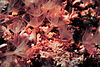

phoronida

Definition: Phoronids (scientific name Phoronida, sometimes called horseshoe worms) are a small phylum of marine animals that filter-feed with a lophophore (a "crown" of tentacles), and build upright tubes of chitin to support and protect their soft bodies. They live in most of the oceans and seas, including the Arctic Ocean but excluding the Antarctic Ocean, and between the intertidal zone and about 400 meters down. Most adult phoronids are 2 cm long and about 1.5 mm wide, although the largest are 50 cm long.
Source: Wikipedia
Wikipedia Page (Something wrong with this association? Let us know.)
Wikidata Page (Something wrong with this association? Let us know.)